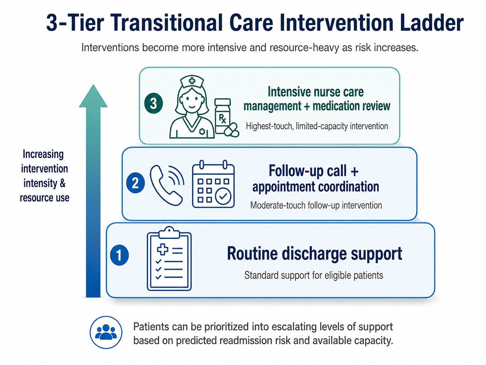

Diabetes Transitional Care Resource Allocation System
Hospitals may face constraints on intensive post-discharge support. This tool ranks patients by 30-day readmission risk, plans cost and capacity scenarios, and grounds its guidance in CMS/AHRQ documents, as a public-data prototype for exploring prioritization scenarios.

Who gets scarce transitional-care resources first?
This prototype assumes a fixed transitional-care capacity and ranks eligible encounters by predicted readmission risk. It explores cost and staffing scenarios; higher predicted risk does not necessarily imply greater benefit from an intervention.
101,766 hospital encounters, narrowed to the real decision population
Built on the UCI Diabetes 130-Hospitals dataset. Expired and hospice discharges were excluded, since transitional care isn't a relevant decision for them, and a patient-grouped train/test split kept the same patient's encounters from leaking across train and test.
Rank, tier, ground, compare, then price it out
A tuned Gradient Boosting model estimates 30-day readmission risk and assigns support tiers. A retrieval-augmented generation (RAG) layer retrieves CMS/AHRQ passages to inform generated responses. A fine-tuned text classifier provides a comparison on the same evaluation metrics. Retrieval and citations do not guarantee that an answer is correct or clinically appropriate.

Every scored patient maps to one of three support levels, so the model's output is a staffing decision, not just a risk number.
In the test set, precision at 500 was 3.6× the readmission prevalence
At the assumed capacity of 500 encounters in the held-out evaluation, calibrated Gradient Boosting had better reported PR-AUC, precision, recall, lift, and expected net value than the text classifier. Expected net value depends on the specified cost and intervention-effectiveness assumptions.
| Metric (at 500 patients) | Gradient Boosting (deployed) | Fine-Tuned Prompt Classifier |
|---|---|---|
| PR-AUC | 0.241 | 0.147 |
| Precision | 40.8% | 23.0% |
| Recall | 9.1% | 5.1% |
| Lift | 3.6× | 2.0× |
| Readmissions captured | 204 | 115 |
| Expected net value | +$113,700 | −$14,300 |
Under the default cost assumptions ($15,000 per readmission, $300 per intervention, 10% intervention effectiveness), the scenario projects 17.6 readmissions, $263,700 in gross avoided cost against $150,000 in intervention spend, for a net value of +$113,700 and a break-even effectiveness of 5.7%. All of these assumptions are adjustable live in the app.
What the comparison actually showed
Accuracy was actively misleading here
The model hits 88.7% raw accuracy, but recall at a standard 0.5 threshold was under 1%, because readmission is rare. Ranking the top 500 and reporting precision/recall there is what a hospital can actually act on.
Tabular Gradient Boosting performed better in this comparison
In this comparison, Gradient Boosting performed better on the reported metrics. The result supports selecting models against task-specific evaluation criteria; it does not establish that tabular methods always outperform text models.
Calibration supports probability-based scenarios
Calibration is intended to align estimated probabilities with observed frequencies on evaluation data. It does not guarantee accurate risks for a new hospital population. The net-value calculator remains a scenario model dependent on calibration, costs, and assumed intervention effectiveness.
Retrieval adds source context to generated guidance
The RAG layer retrieves CMS/AHRQ passages and provides source references. Users still need to check whether the retrieved passage supports the generated response; citations alone do not rule out unsupported conclusions.